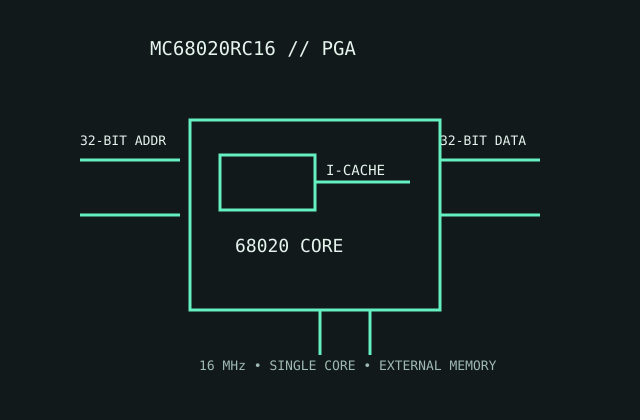

[ MOTOROLA 68000 FAMILY // FULL 32-BIT BUS ]
Motorola MC68020RC16
The 16 MHz full-featured 68020 brings 32-bit addressing and data paths, a small instruction cache and support for an external paged-MMU coprocessor.

MODEL IDENTIFICATION: MC68020RC16; 16 MHz ceramic PGA speed/package variant. The RC package is not an interchangeable socket standard across all 68020 boards.
Recorded specifications
| Model | MC68020RC16. |
|---|---|
| Generation | Second-generation 32-bit 68000 family, 1984-era design. |
| Architecture / cores | Motorola 68020 CISC ISA; one CPU core with 32-bit registers and execution datapath. |
| Frequency / cache | 16 MHz maximum speed grade; 256-byte instruction cache; no on-chip data cache. |
| Package / socket | RC ceramic pin-grid-array package; use the matching PGA socket and pin map listed for the precise ordering code. |
| Power | 5 V nominal supply. No current-era TDP; follow the speed-grade data sheet's maximum current and package dissipation, with board-level airflow as required. |
| Memory / bus | 32-bit external data and address buses; accesses external memory. A 68851 PMMU can provide paged translation when supported by system hardware/software. |
| Board compatibility | Requires a full MC68020 bus-capable board, 5 V signaling, appropriate clock and a compatible PGA footprint. Confirm external MMU, coprocessor, memory controller and firmware support. |
Compatibility notes
- Do not substitute an EC020: it has a reduced address interface and omits the full 68020 memory-management feature set.
- Check socket pinout and board revision, not just the stated 16 MHz clock.
- Older 68000 boards require substantial bus and memory-system redesign to support this part.
Sources & further reading
- Motorola MC68020 32-Bit Microprocessor User's Manual (Bitsavers)Manufacturer-authored manual archive covering architecture, bus, package and system design.
- NXP-hosted Motorola MC68020 User's ManualManufacturer-maintained legacy document for MC68020 operation and electrical interface; check revision when matching old hardware.